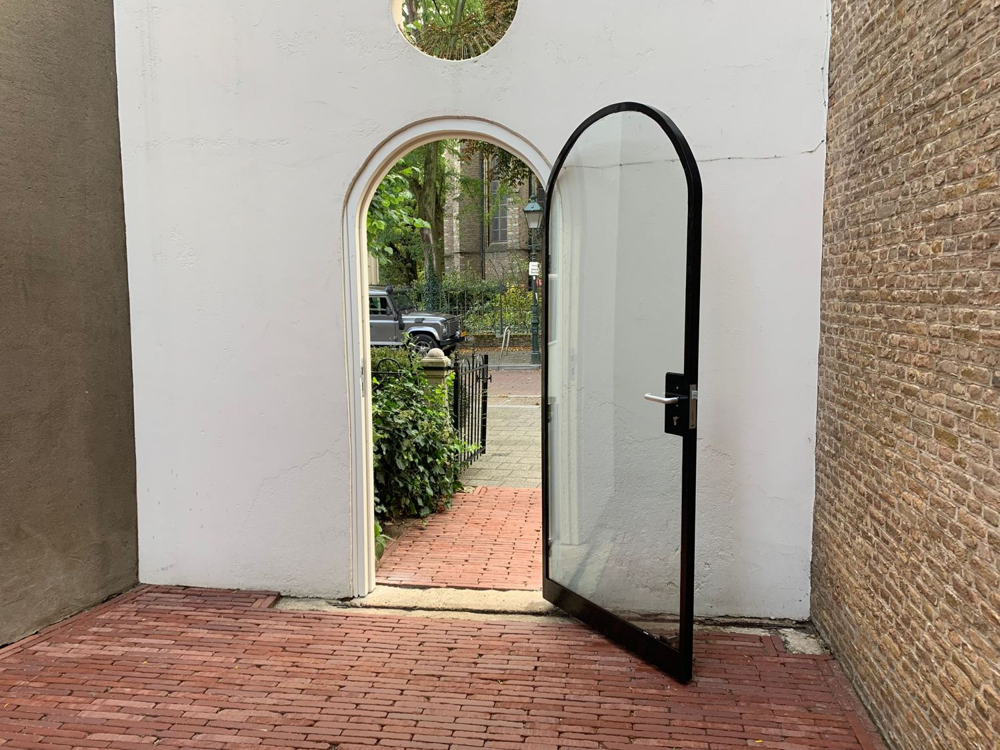
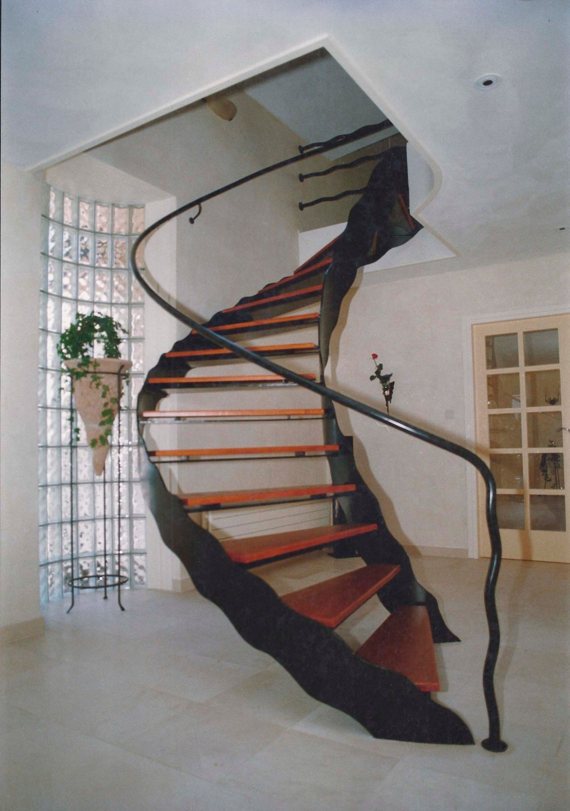
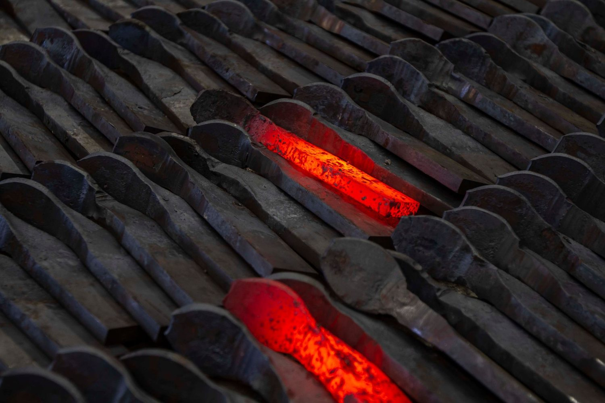
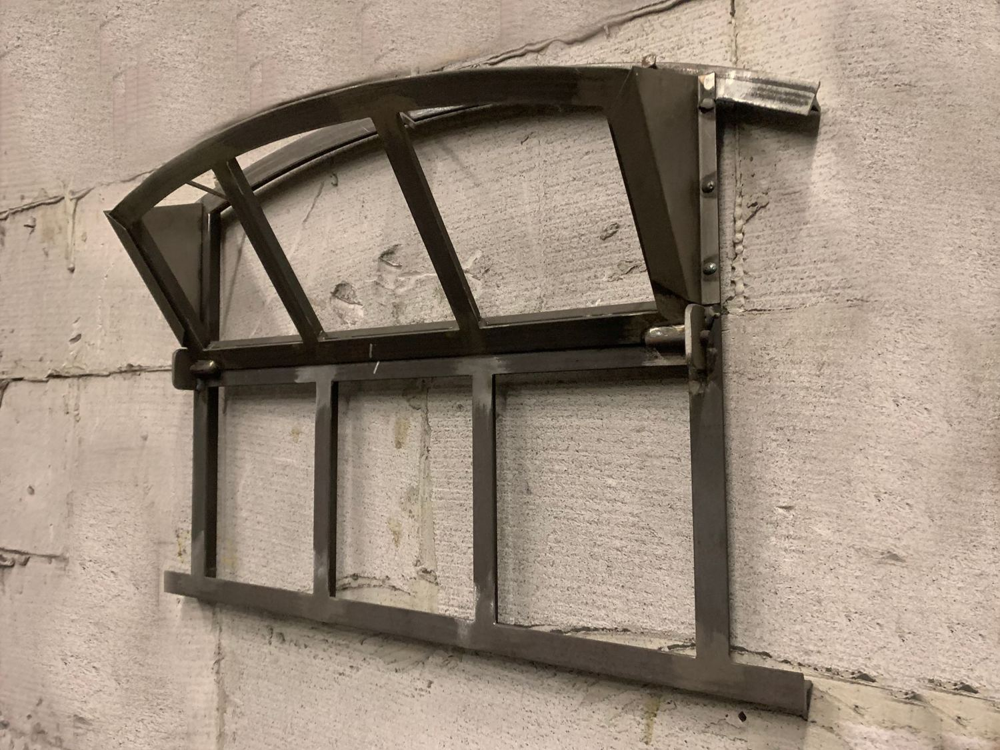
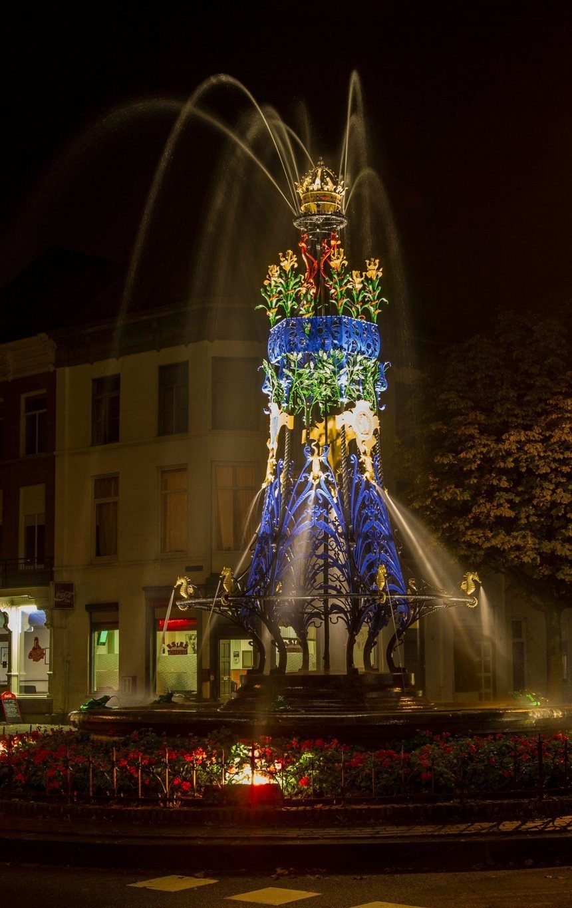

Poorten en hekwerk
Sierhekwerk op maat, exclusieve looppoorten en veilige inrijpoorten. Naar uw ontwerp of dat van ons.
Breda, sinds 1988
Van een gesmede roos tot een inrijpoort of stalen pui. Op maat gemaakt in staal, rvs, aluminium, koper en messing.
Sierhekwerk op maat, exclusieve looppoorten en veilige inrijpoorten. Naar uw ontwerp of dat van ons.

Binnendeuren van staal met 6 mm gehard veiligheidsglas voor een moderne, industriële uitstraling.

Trappen en bordessen in alle soorten en maten.

Toegangspoorten, hekwerken, torenbekroningen en windvanen van onder andere historische gebouwen en kerken, op traditionele wijze.

Van kleine tot grote opdrachten, van restauratie tot seriematig werk.

Staal, roestvaststaal, aluminium, koper en messing. In onze werkplaats of op locatie.

Vakwerk in de stad
De fontein werd in 1898 op de Grote Markt neergezet bij de troonsbestijging van koningin Wilhelmina en staat nu in de Sophiastraat. Smederij van der Woerd heeft haar in 2013 volledig gerestaureerd.